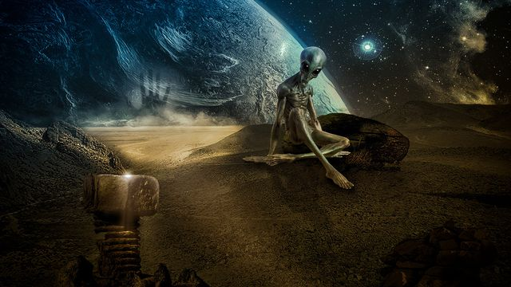

Corpos celestes
Por: Pedro Soares & Leonardo Lima

Existem diversos tipos diferentes de corpos celestes no espaço, alguns sendo extremamente peculiares.
O universo é repleto de fenômenos fascinantes, desde de corpos celestes que viajam pelo vácuo até estrelas que desafiam a nossa compreensão do tempo e da física.
Confira alguns exemplos de corpos celestes impressionantes:
.Estrela "Matusalém": Localizada a cerca de 190 anos-luz da terra, sendo considerada mais velha que o próprio universo, podendo ter 14,5 bilhões de anos.
.Planetas que flutuam: Saturno é o unico planeta cuja densidade é menor que a da água, se fosse possível criar uma piscina de seu tamanho, ele flutuaria nela como uma bola de isopor.
Possibilidade de vida fora da terra
Apesar de não haver provas, a ciência considera provavel a existência de vida fora da terra devido a vastidão do universo
Isso se organiza através de algumas frentes principais:
Bioassinaturas e Exoplanetas
Água e ambientes habitáveis em outros planetas
A hipótese Microbiana(organismos unicelulares simples)
Se existesse vida fora da Terra o que aconteceria
Provavelmente não aconteceria nada com nós trabalhadores mas os especialista na área mudaria completamente o rumo da ciência.